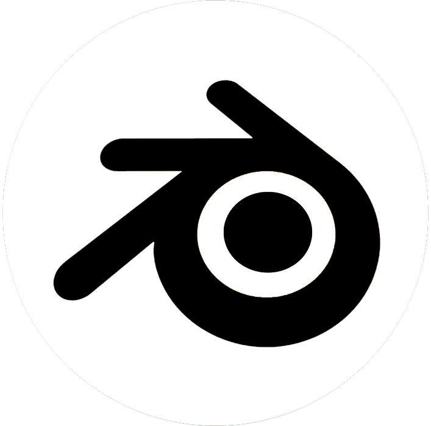
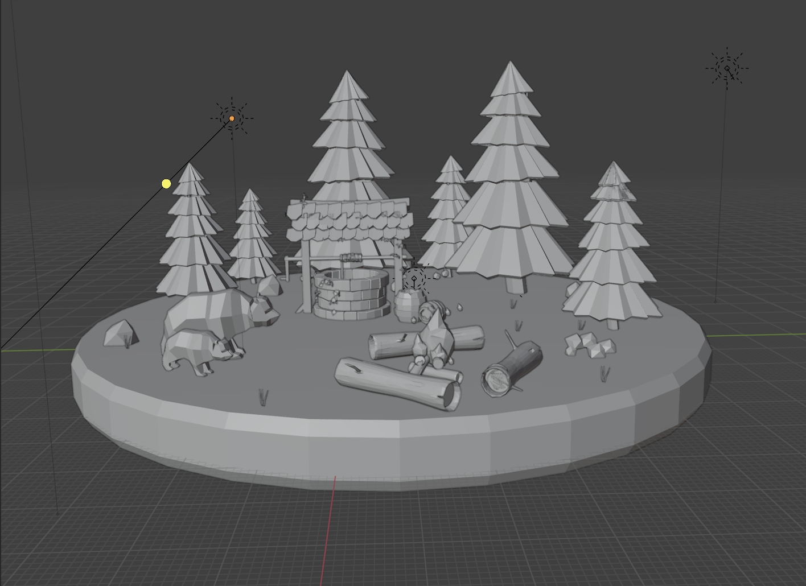
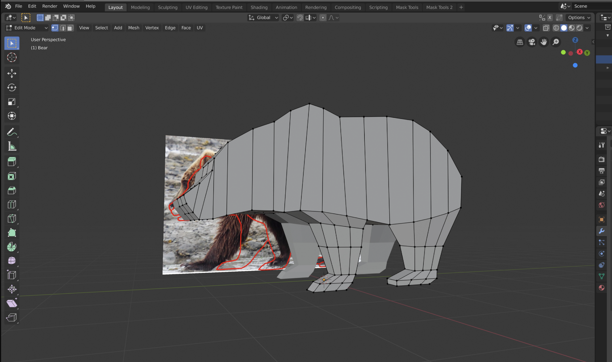
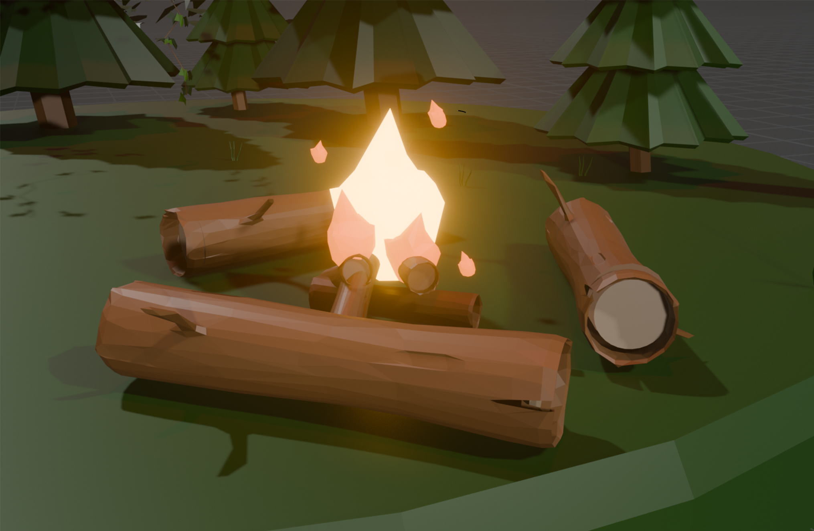
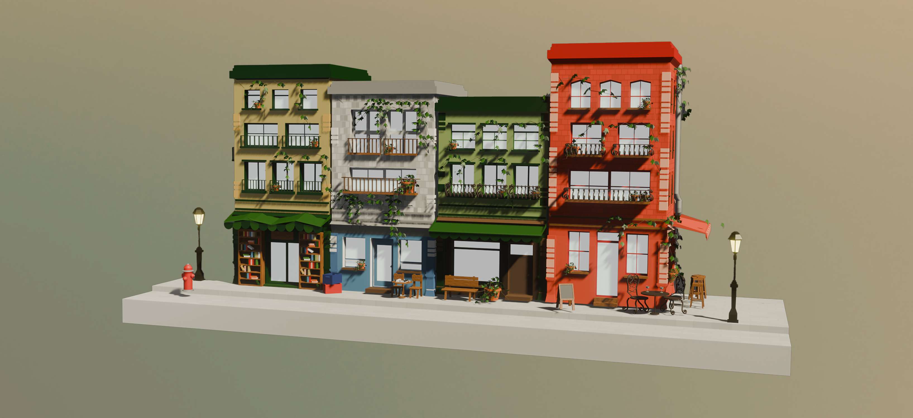
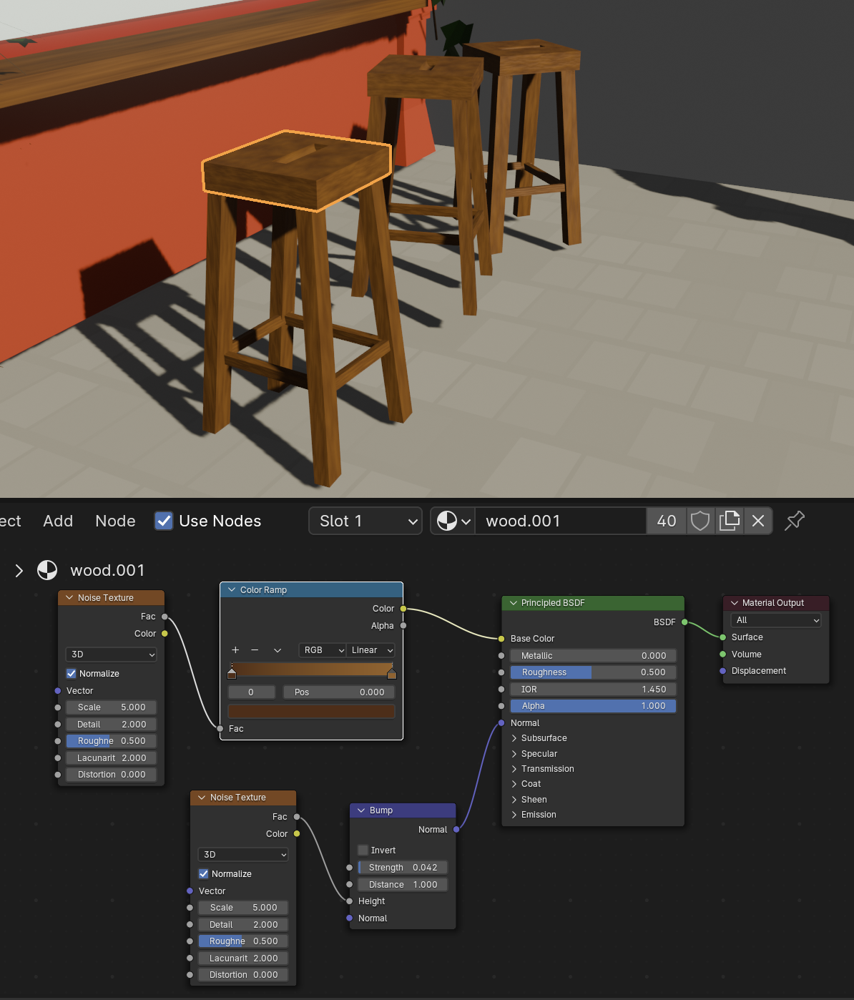
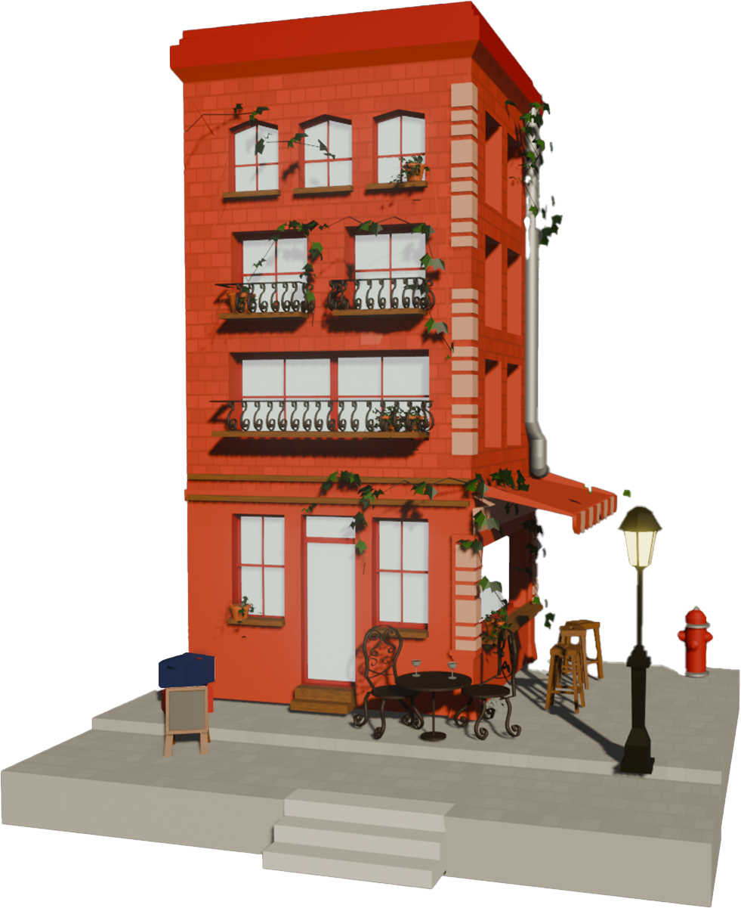
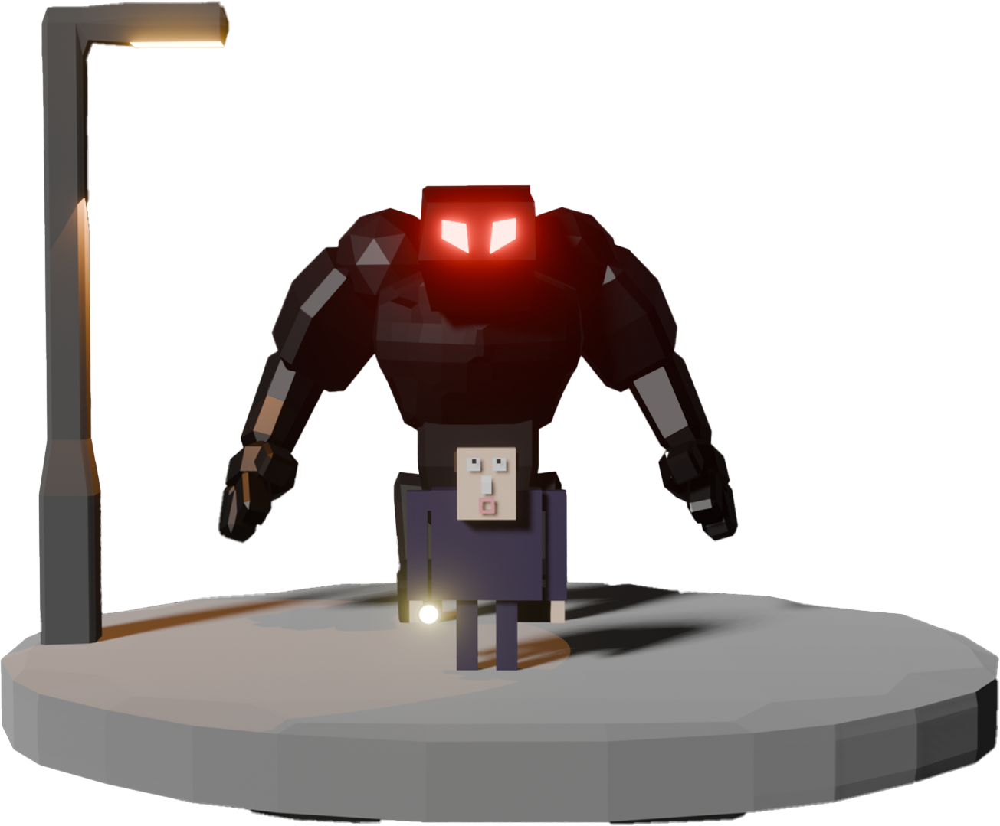

Skills
-
Blender

-
Modeling
Voor dit project heb ik een 3D bos model gemaakt in Blender, met bomen, een waterput, beren en een kampvuur. Het project begon met een tutorial waarin ik leerde hoe ik een waterput kon modelleren. Deze tutorial diende als een goede basis om mijn vaardigheden in modeling en shading verder te ontwikkelen. Na het maken van de waterput, besloot ik het project uit te breiden door meerdere models toe te voegen. Voor de beren heb ik gebruikgemaakt van de mirror modifier, wat er voor zorgde dat ik makkelijk te werk kon gaan om zo eensymmetrisch 3D design kon maken.
  -

Properties
Tijdens het creëren van het bos in Blender heb ik ook verschillende properties en lichtinstellingen aangepast om de sfeer en details in de scene te versterken. Voor het kampvuur wilde ik een realistisch en sfeervol effect creëren. Dit heb ik bereikt door gebruik te maken van de bloom property. Daarnaast heb ik veel aandacht besteed aan de structures in de models. Voor de boomstronken gebruikte ik verschillende modifiers om de schors meer detail en textuur te geven. Door deze technieken toe te passen, kregen de bomen een realistische uitstraling.
- 
-

Textures
Voor het 3D straatje heb ik veel aandacht besteed aan het gebruik van textures om de materialen realistisch en sfeervol te maken. De houten elementen, zoals krukjes, raamkozijnen en bankjes, heb ik voorzien van gedetailleerde houttextures. Deze textures, gaven het hout een natuurlijke uitstraling, waarbij de nerven van echt hout goed zichtbaar werden. Bij de gebouwen zelf heb ik baksteentexturen gebruikt om het 3D design er realistischer en gedetaileerder uit te laten zien.
-  